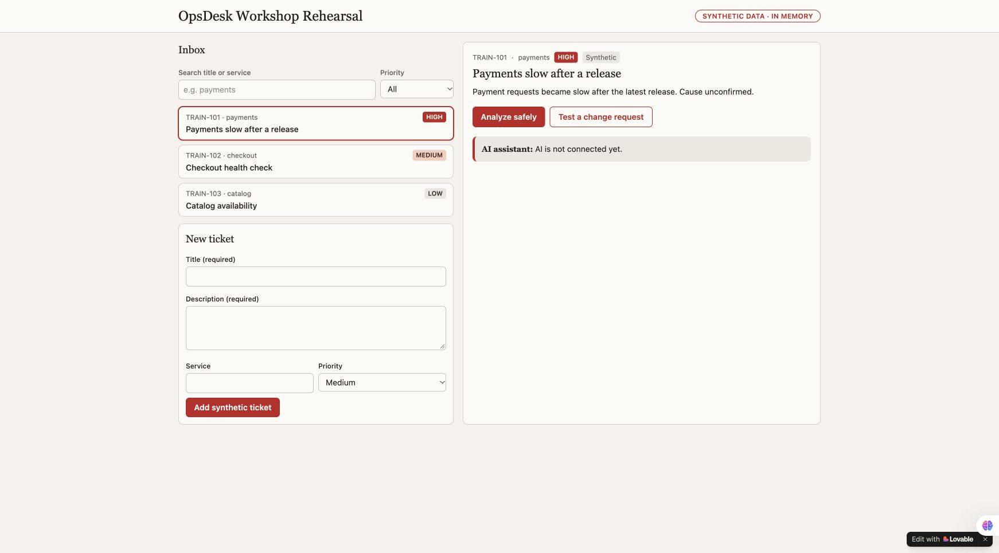

This is the route used for the actual OpsDesk rehearsal. Build a useful inbox first, connect native AI, then inspect the harness and prove the change boundary. Add Langfuse after the app works.
You can create, search, filter and select a ticket; obtain a real native-model/tool answer; inspect its reported usage; and show a server-enforced change stop. Observability export and independent trace readback are separate checks, not implied by that finish line.
Your shortest route: three prompts, one working app.
Stay in the same Lovable project. No terminal is needed for this route. Each step says where to act and what you should see before continuing.
Build the screen · paste prompt 1 in Lovable chat. See three tickets.
Connect AI · paste prompt 2 in that same chat. Sign into your app.
Try the controls · create, search and select a synthetic ticket.
Investigate · click Analyze safely once. Read the actual result.
Check security · click Test a change request. Expect zero model calls.
See the trace · paste prompt 3, save your three server secrets, check setup, then verify one run in Langfuse.
Copy prompt 1 below → paste it into a new Lovable project → send.
Look for: Three tickets and a usable inbox. AI is not connected yet.
01 · DEFINE AND BUILD
Make the app visible.
Start a new project in your own builder account. Copy this prompt, then use the actual preview rather than treating the builder's completion message as acceptance.
{{inbox_prompt}}
EXPECTED RESULTThree synthetic incidents, search, priority filter, selected detail and a working new-ticket form. The AI panel explicitly says it is not connected.

Real first-build checkpoint. This screen proves visible controls, not model execution.
WHERE · Same Lovable chat
Copy prompt 2 → paste and send in the same project → review backend activation.
Look for: A protected Analyze safely action, with app sign-in.
02 · ADD THE NATIVE BACKEND
Give the same app a protected AI action.
Use the next prompt in the same project. It asks Lovable to implement the server, authenticated entry, bounded model loop, strict tools and actual inspector. It uses the builder's available native model; a separate local gateway is not needed for this route.
{{native_prompt}}
Review any request to enable Lovable Cloud or backend capabilities. Use your own existing credits and current plan. The rehearsal used a maximum of three model calls and two analyses per minute / ten per UTC day per account. A free course does not include free builder/model usage.
WHERE · Your app preview
Open the preview and use its Sign in control. Review the consent.
Look for: Signed in · workshop session.
03 · SIGN IN TO YOUR APP
Two sign-ins, two different jobs.
Google SSO opens the builder workspace. The generated app then authenticates its own user through a supported sign-in flow. Review its consent before allowing name/email sharing. The presentation UI should say “Signed in · workshop session,” without showing an account identifier.
The editor preview is blurred or blank
Use its actual Open preview control and check the rendered app. Authenticated preview URLs can contain access tokens. Never paste them into GitHub, course notes or recordings. Do not disable authentication to make the demo easier.
WHERE · Your app preview
Follow the six clicks below. No chat or terminal command is required.
Look for: Search, filter and selected detail behave as described.
04 · PROVE THE VISIBLE CONTROLS
Try the same small acceptance script.
Submit the blank new-ticket form. Required fields must prevent creation.
Create “Workshop rehearsal: checkout check,” with a synthetic read-only description, service checkout and Medium priority.
Search its exact title: one ticket should match.
Choose High while that search remains: the empty state should appear.
Clear the search while High remains: only the high-priority payments ticket should appear.
Choose All and select TRAIN-101. Its detail must replace the created ticket's detail.
These interactions were repeated in the actual authenticated Lovable app. Tickets remain in memory; a reload resets them. Persistent incident storage is a later capability.
WHERE · Your app preview
Copy the request below into Analysis request → click Analyze safely once.
Look for: An actual answer and model/tool events. Wait; do not click repeatedly.
05 · RUN ONE REAL INVESTIGATION
Ask for evidence, not an automatic repair.
Analyze this synthetic incident using read-only evidence.
Select TRAIN-101, then click Analyze safely once. Wait for the actual result. The model should use the registered synthetic service-health and release-diff tools, separate observation from uncertainty, and recommend safe read-only next checks.
Fresh repeated rehearsal: the real answer completed with two model calls. The cause stayed unconfirmed; no change was executed. Account details and run identifiers are absent from this selected capture.
One earlier recorded run reported 952 tokens in 5.218 seconds; the repeated check reported 944 tokens in 5.577 seconds. Variation is normal. Neither figure is a promise, a benchmark or a bill.
WHERE · Your app preview
Expand Run inspector. Compare its events with the agent map.
Look for: Actual calls and usage; unknown cost is allowed.
06 · OPEN THE HARNESS
Match the explanation to actual events.
Expand Run inspector. Find the actual model call count, tool names, elapsed time and reported token usage. Cost must remain unknown unless matching sourced rates are configured. Keep gateway/trace IDs private in your own receipts; show only selected safe evidence to an audience.
Click Test a change request. The actual app returns approval_required, model not called, zero model calls and an explicit server-block event. It offers no approval-resume or infrastructure-changing tool.
Real explicit-change boundary check. This case does not prove universal prompt-injection resistance or a production security audit.
The downloaded source's 24 isolated tests passed locally: eight server-safety checks, eight exporter checks and one routing check. They use model/export doubles; live authentication and provider acceptance require their own checks.
WHERE · Lovable chat → server Settings → Langfuse
Copy prompt 3 below → let the builder instrument the server → save your own three secrets → Check telemetry setup.
Look for: All fields present and origin valid. Then one synthetic run must appear in your own Langfuse project.
08 · ADD AGENT VISIBILITY
Three server settings, one real trace.
Use the instrumentation prompt below, keeping the existing LLM. In the project toolbar, open More → Settings → Secrets and add LANGFUSE_BASE_URL, LANGFUSE_PUBLIC_KEY and LANGFUSE_SECRET_KEY through the protected secret form. Never paste values into builder chat, ordinary browser forms, public-prefixed variables or Git.
{{langfuse_prompt}}Use the free European Langfuse Cloud option
Open the region selector, choose Europe and sign into your own account with your selected SSO provider.
Review the displayed legal terms. Confirm Hobby. Review optional AI-powered features separately because they can forward project data to another service; they are not required for tracing.
Name a dedicated workshop project. In Project Settings → API Keys, create a named application key with the Ingestion role and a bounded expiry, such as 30 days.
Save its one-time values privately, then enter only the three required fields in Lovable's server Secrets. An ingestion key writes telemetry; use your authenticated Langfuse owner/viewer session for independent readback rather than giving the app full project privileges.
The official pricing page currently lists 50,000 units/month, 30 days of data access and two users on Hobby; recheck at signup. Units are not traces.
Actual first-setup screen before key creation. The visible key strings are provider placeholders, not credentials. Account controls, project identifiers and browser address bar are outside this capture.The secret records exist, but the app still says not configured
Stop before another model call. Check the exact project, preview/runtime binding, secret names and supported server integration. Diagnose only boolean presence, never values or derived values. Refresh the supported runtime if required. Do not move keys into browser code, VITE_ variables, public files or chat to bypass the problem. Request a new bounded live test if the previous canary allowance has been used.
Actual successful run: six observations, 948 reported tokens. Account controls and private identifiers are outside this capture. Displayed costs are calculated by Langfuse, not a bill.
INDEPENDENT ACCEPTANCE
Run one synthetic investigation after configuration, then find its exact trace in the intended project. Verify the agent root, authorization, actual generations and tool observations. Export acknowledgment is not readback. Check the stored metadata excludes identities, secrets and raw content.
Current course evidence proves the native app and explicit change stop. The rehearsed native run was independently found in Langfuse: its exact trace and random session matched, with six observations and 948 reported tokens. OCI APM and Log Analytics remain separate integrations and readback gates.
WHERE · Your project workspace
Reopen your project and use your downloaded workflow for the next part.
Look for: The same app, with a clear record of what passed and what remains.
09 · REOPEN, HAND OVER, KEEP BUILDING
Leave a demo someone else can repeat.
Reopen the same project through the builder workspace, or run your own configured source runtime. A token-bearing preview URL is not a student handoff. Document the supported start/reopen path, chosen model, synthetic inputs, actual outputs, usage availability, policy result, telemetry status and unresolved gates.
Terminal · optional. Install Git first. Run these commands in the folder where you keep projects. If you already cloned it, open that existing folder instead.
Browser · no terminal? Open the GitHub project → Code → Download ZIP. The reference-app folder contains the actual app source; docs contains the lessons. Neither includes credentials or a ready-to-use backend account.
Developer option: test the reference app source
Requires an existing Bun installation. From the repository root, run one command at a time. Installation downloads pinned dependencies; tests use isolated model/export doubles and need no keys. These tests do not start or authenticate the app.
cd reference-app
bun install --ignore-scripts --frozen-lockfile
bun run test
To run the real app, configure your own supported backend/auth/native-model runtime. For the easiest working hosted route, build inside your own Lovable project using the prompts above.